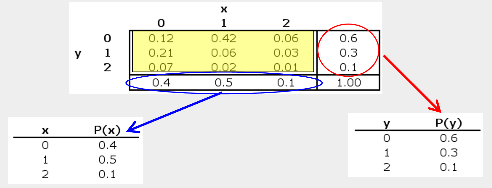

7 Discrete Probability Distribution
NoteLearning objectives
By the end of this chapter, you should be able to:
- explain what a random variable is (and why we use it),
- distinguish between discrete and continuous random variables,
- construct a probability mass function (PMF) from an experiment,
- compute expected value \(E(X)\) and variance \(\mathrm{Var}(X)\) from a PMF,
- use basic rules of expectation and variance for linear transformations,
- work with joint (bivariate) discrete distributions,
- compute marginal distributions, covariance, and correlation from a joint distribution.
We begin by defining a random variable as a rule that assigns a number to each outcome of an experiment.
Instead of describing a single coin toss as \(\{\text{Heads}, \text{Tails}\}\), for example, we can “translate” outcomes into numbers such as 1 and 0. That numerical description is often more convenient — because once outcomes are numbers, we can compute averages, spreads, and relationships.
So a random variable is a bridge:
experiment \(\rightarrow\) outcomes \(\rightarrow\) numbers
NoteA light (but useful) formal definition
A random variable is a function \(X\) that maps outcomes into real numbers:
\(X:\Omega \to \mathbb{R}\)
Here \(\Omega\) is the sample space (all possible outcomes).The experiment produces an outcome \(\omega \in \Omega\), and the random variable outputs the number \(X(\omega)\).
7.1 Probability distributions
Once we have a random variable \(X\), we can ask:
How likely is each possible value of \(X\)?
A probability distribution answers this question by listing the possible values of \(X\) and the probability attached to each one.
Formally, if \(A\) is a set of real numbers, the probability that \(X\) falls in \(A\) is
\(P_X(A) = P(\{\omega \in \Omega : X(\omega)\in A\})\).
You do not need to memorize that expression. The idea is simple:
The probability that \(X\) lands in a set \(A\) equals the probability of all outcomes that map into \(A\).
TipTossing a fair coin (as a random variable)
- Sample space: \(\Omega = \{\text{Heads}, \text{Tails}\}\)
- Random variable: \(X(\text{Heads}) = 1\), \(X(\text{Tails}) = 0\)
- Distribution: \(P(X=1)=1/2\), \(P(X=0)=1/2\)
7.2 Discrete vs. continuous random variables
A discrete random variable takes values that are separated and countable (often whole numbers like \(0,1,2,\dots\)).
A continuous random variable can take any value on an interval of the real line.
A helpful analogy:
- Integers are discrete
- Real numbers are continuous
ImportantDiscrete vs. continuous
- Discrete random variable: described by a probability mass function (PMF)
\(P(X=x_i)=p_i,\quad p_i\ge 0,\quad \sum_i p_i = 1\)
- Continuous random variable: described by a probability density function (PDF)
\(P(a \le X \le b)=\int_a^b f(x)\,dx,\quad f(x)\ge 0,\quad \int_{-\infty}^{\infty} f(x)\,dx = 1\)
7.3 The discrete random variable: an example
In earlier chapters, we used histograms, means, and standard deviations to summarize data.
In probability, we summarize random variables — and the key object is the probability distribution, which tells us how probabilities are allocated across possible outcomes.
7.3.1 Example: tossing a coin three times
Consider the experiment: toss a coin three times.
Let \(X\) be the random variable “number of heads in 3 tosses.”
The sample space has 8 equally likely outcomes. We can list outcomes and compute \(X\):
\[ \begin{array}{|c|c|} \hline \text{Outcome} & X = \text{No. of Heads} \\ \hline TTT & 0 \\ TTH & 1 \\ THT & 1 \\ THH & 2 \\ HTT & 1 \\ HHT & 2 \\ HTH & 2 \\ HHH & 3 \\ \hline \end{array} \] Outcomes of 3 tosses of a coin
From this we get the PMF (probability distribution) of \(X\):
\[ \begin{array}{|c|c|} \hline x & P(X=x) \\ \hline 0 & 1/8 = 0.125 \\ 1 & 3/8 = 0.375 \\ 2 & 3/8 = 0.375 \\ 3 & 1/8 = 0.125 \\ \hline \Sigma & 1.000 \\ \hline \end{array} \] Probability distribution of \(X\) = number of heads in 3 tosses
7.4 Visualizing the PMF and CDF
7.4.1 PMF (a probability “histogram”)
7.4.2 CDF (cumulative distribution function)
The CDF tells us \(P(X\le x)\) — the probability that the random variable is at most \(x\).

7.5 The mean and the variance
Apart from drawing the probability distribution or histograms, we have seen that numerical summaries such as the mean and variance are useful.
The mean is the long-run average value of a random variable, which is also referred to as its expected value, denoted \(E(X)\).1
\[ E(X) = \mu = \sum_{i=1}^{n} P(X_i) X_i \tag{7.1}\]
The variance which measures the spread or variation of the distribution is defined as:
\[ Var(X) = \sigma^2 = \sum_{i=1}^{n} P(X_i) (X_i- {\overline X})^2 \tag{7.2}\]
To get the standard deviation, simply calculate the square root of the variance.
It is easy to see that the formulas for expected value and variance are structurally identical—they are both weighted averages–to the “usual” formulas for mean and variance in previous chapters. The only difference is what weights are used.
NoteA key viewpoint
Both \(E(X)\) and \(\mathrm{Var}(X)\) are weighted averages.
In samples, each observation often has equal weight \(1/n\).
In probability models, values are weighted by their probabilities.
7.6 Example
Let’s apply the expected value and variance formulas with the example above which defines the random variable \(X\) as the number of heads in 3 tosses.
To compute the mean, use Equation 7.1, shown in the table below–summing the last column of the table gives \(\mu = 1.5\).
\[ \begin{array}{|c|c|c|} \hline X & P(X) & X \cdot P(X) \\ \hline 0 & 1/8 & 0 \\ 1 & 3/8 & 3/8 \\ 2 & 3/8 & 6/8 \\ 3 & 1/8 & 3/8 \\ \hline \textbf{Total} & \mathbf{1} & \mathbf{12/8 = 1.5} \\ \hline \end{array} \]
To get the variance, applying Equation 7.2, as shown in the the table below and summing the last column of the table gives \(\sigma^2 = 0.75\)
\[ \begin{array}{|c|c|c|c|} \hline X & P(X) & (X_i - \mu) & (X_i - \mu)^2 \cdot P(X) \\ \hline 0 & 0.125 & -1.5 & 0.28125 \\ 1 & 0.375 & -0.5 & 0.09375 \\ 2 & 0.375 & 0.5 & 0.09375 \\ 3 & 0.125 & 1.5 & 0.28125 \\ \hline \mathbf{\Sigma} & \mathbf{1.000} & & \sigma^2 = \mathbf{0.75} \\ \hline \end{array} \]
Careful, we have the variance \(=0.75\), hence the standard deviation \(\sigma = \sqrt{0.75}\) which is about \(0.8667\).
7.7 Rules of expected value and variance
Let us introduce some basic rules of expected value and variance. Firstly, for expected value, we have:
Rule E1 \[E(k)=k\] Rule E2 \[E(X+k)=E(X)+k\]
Rule E3 \[E(kX)=kE(X)\]
Rule E1 states that the expected value (or average) of a constant is that constant. Rule E2 states that the expected value of a random variable to which a constant has been added is equal to the expected value of the random variable plus the constant. Rule E3 states that the expected value of a random variable multiplied by a constant is equal to the constant times the expected value of the random variable.
Secondly, the rules of variance are:
Rule V1 \[Var(k)=0\]
Rule V2 \[Var(X+k)=Var(X)\]
Rule V3 \[Var(kX)=k^2 Var(X)\]
Rule V1 states that the variance of a constant is zero (i.e., there is no spread). Rule V2 states that the variance of a random variable to which a constant has been added is simply equal to the variance of the random variable. Lastly, Rule V3 states that the variance of a random variable multiplied by a constant is equal to the constant squared times the variance of the random variable.2
NoteExample: Monthly Profit Analysis
Let’s illustrate how these rules apply to a real-world scenario.
The Data: For a food store, monthly sales have a mean (\(\mu\)) of Baht 25,000 and a standard deviation (\(\sigma\)) of Baht 4,000. Profits are defined as 30% of sales minus fixed costs of Baht 6,000.
The Goal: Find the mean and standard deviation of the monthly profit.
1. Define the Equation: \[Profit = 0.30(Sales) - 6,000\]
2. Calculate the Expected Value (Mean):
\[ \begin{aligned} V(\text{Profit}) &= V[0.30(\text{Sales}) - 6,000] \\ &= V[0.30(\text{Sales})] && \text{(Rules V2 \& V1)} \\ &= (0.30)^2 V(\text{Sales}) && \text{(Rule V3)} \\ &= 0.09 \cdot (4,000)^2 \\ &= 0.09 \cdot 16,000,000 \\ &= 1,440,000 \end{aligned} \]
3. Calculate the Variance and Standard Deviation: First, we find the variance (\(V\)). Remember that \(V(Sales) = \sigma^2 = 4,000^2\). \[ \begin{aligned} V(\text{Profit}) &= V[0.30(\text{Sales}) - 6,000] \\ &= V[0.30(\text{Sales})] && \text{(Rules V2 \& V1)} \\ &= (0.30)^2 V(\text{Sales}) && \text{(Rule V3)} \\ &= 0.09 \cdot (4,000)^2 \\ &= 0.09 \cdot 16,000,000 \\ &= 1,440,000 \end{aligned} \]
Finally, the standard deviation is: \[\sigma_{\text{Profit}} = \sqrt{1,440,000} = \mathbf{1,200}\]
7.8 Discrete bivariate distributions
So far, we have focused on univariate distributions. We now extend these ideas to bivariate probability distributions, which arise from joint probabilities.
A joint probability distribution of two discrete random variables \(X\) and \(Y\) is a table or formula that lists the joint probabilities for all pairs of values \((x, y)\). It is denoted by \(P(X,Y)\) or, equivalently, \(P(X = x \text{ and } Y = y)\).
As we would expect, joint probabilities satisfy the following basic properties:
\(0 \le P(X,Y) \le 1\)
and
\(\sum_x \sum_y P(X,Y) = 1\).
7.8.1 Joint and marginal probabilities
Let’s take an example. Xavier and Yvette are real estate agents; Let’s use X and Y to denote the number of houses each sells in a month, respectively. The following joint probabilities are based on past sales performance.
| x=0 | x=1 | x=2 | |
|---|---|---|---|
| Y=0 | 0.12 | 0.42 | 0.06 |
| Y=1 | 0.21 | 0.06 | 0.03 |
| Y=2 | 0.07 | 0.02 | 0.01 |
7.8.1.1 Marginal distribution
The marginal probabilities are obtained by summing the joint probabilities across rows or down the columns. They describe the probabilities of \(Y\) and \(X\) individually, ignoring the other variable.

Then using these marginal probabilities, we can compute the mean, and variance of each variable in a bivariate distribution by Equation 7.1 and Equation 7.2.
Check that you get \(E(X)=0.7\) and \(E(Y)=0.6\), respectively. How about the variances and standard deviations?3
7.8.2 Correlation
The correlation coefficient is obtained by dividing the covariance by the product of the standard deviations:
\[ \text{Corr}(X,Y) = \dfrac{\text{Covariance}(X,Y)}{SD_X \, SD_Y} \]
Let’s try finding the correlation of Xavier and Yvette.
7.8.2.1 Covariance of two discrete variables
Starting from the covariance between two discrete random variables defined as
\[ Cov(X,Y) = P(X,Y) \sum_X \sum_Y (X - \overline{X})(Y - \overline{Y}) \tag{7.3}\]
or an alternative shorter formula is: \[ Cov(X, Y) = \sum_x \sum_y XY P(X, Y) - \overline{XY} \]
Try showing that the two equations are in fact the same.
Operationalizing Equation 7.3 gives
\[ \text{Covariance}(X,Y) = (0–.7)(0–.5)(.12) + (1–.7)(0-.5)(.42) + \dots + (2–.7)(2–.5)(.01) = –0.15 \]
NoteCovariance and correlation
Covariance measures whether \(X\) and \(Y\) tend to move together, while the correlation coefficient rescales covariance into a unit-free number:
\[ \mathrm{Corr}(X,Y)=\dfrac{\mathrm{Cov}(X,Y)}{\mathrm{SD}_X \mathrm{SD}_Y} \].
Correlation is always between \(-1\) and \(1\).
And finally, we get:
\[ \text{Corr} (X,Y) = \dfrac{-0.15}{0.64 \times 0.67} \approx -0.35 \]
A negative correlation meaning when Xavier does well, Yvette doesn’t (and vice-versa).
ImportantChapter Summary
In this chapter, we introduced a random variable as a rule that assigns numbers to the outcomes of a random experiment, allowing us to analyze uncertainty mathematically.
A discrete probability distribution describes how probabilities are assigned to distinct values through a probability mass function (PMF). These probabilities must be nonnegative and sum to one.
We defined the expected value and variance as probability-weighted summaries of the distribution. The expected value represents the long-run average, while the variance measures dispersion around the mean.
Extending these ideas to two variables, we studied joint distributions, from which marginal distributions can be derived. Finally, we introduced covariance and correlation to measure the direction and strength of linear association between discrete random variables.
7.9 Exercises
7.9.1 Understanding discrete random variables
- Random variables
- What is a discrete random variable?
- Explain the difference between a random outcome and a random variable.
- Give two real-world examples of discrete random variables.
- Probability distributions
A discrete random variable \(X\) takes values \(x_1, x_2, \dots, x_k\) with probabilities \(P(X=x_i)\).
- State the two conditions a probability distribution must satisfy.
- Explain in words why these conditions are necessary.
7.9.2 Mean and variance
- Computing moments
The random variable \(X\) has the following distribution:
| \(X\) | 0 | 1 | 2 | 3 |
|---|---|---|---|---|
| \(P(X)\) | 0.4 | 0.3 | 0.2 | 0.1 |
- Compute \(E[X]\).
- Compute \(\text{Var}(X)\).
- Compute the standard deviation of \(X\).
- Interpret the expected value in words.
- Linear transformations
Let \(Y = 3X + 2\).
- Compute \(E[Y]\).
- Compute \(\text{Var}(Y)\).
- Find the standard deviation of \(Y\).
- Explain why adding a constant affects the mean but not the variance.
7.9.3 Joint distributions
- Marginal distributions
The joint probability distribution of \(X\) and \(Y\) is:
| \(Y=-1\) | \(Y=0\) | \(Y=1\) | |
|---|---|---|---|
| \(X=0\) | 0.1 | 0.1 | 0.1 |
| \(X=2\) | 0.1 | 0.2 | 0.1 |
| \(X=4\) | 0.1 | 0.1 | 0.1 |
- Compute the marginal distribution of \(X\).
- Compute the marginal distribution of \(Y\).
- Compute \(E[X]\) and \(E[Y]\).
- Independence and correlation
Using the table in Question 5:
- Are \(X\) and \(Y\) independent? Justify your answer.
- Compute \(\text{Cov}(X,Y)\).
- Compute \(\text{Corr}(X,Y)\).
- Explain why zero correlation does not necessarily imply independence.
7.9.4 Counting and binomial reasoning
- Three coin tosses
Let \(X\) be the number of heads when a fair coin is tossed three times.
- List all possible outcomes.
- Construct the probability distribution of \(X\).
- Compute \(E[X]\) and \(\text{Var}(X)\).
- Families and children
Assume that the probability of a boy equals the probability of a girl and that births are independent.
- In families with five children, what proportion have more girls than boys?
- List all relevant outcomes explicitly.
7.9.5 Conceptual questions
- Big picture
- Why is the expected value often called the “long-run average”?
- Why is variance measured in squared units?
- Give one economic example where a discrete random variable is more appropriate than a continuous one.
- Explain in your own words the difference between independence and zero covariance.
The expected value is sometimes referred to as the population average; We will see later another definition of the expected value in later chpaters, as the “average” over infinite samples.↩︎
It is instructive to compare the expected value and variance rules with the summation rules.↩︎
These are sometimes referred to as moments–the mean and variance are the first moments and second central moments, respectively.
\[ \begin{array}{|c|c|c|c|} \hline \text{Order} & \text{Raw Moment} & \text{Central Moment} & \text{Common Name} \\ \hline \text{1st} & \mu_1' = E[X] & \mu_1 = E[X - E[X]] = 0 & \text{Mean} \\ \hline \text{2nd} & \mu_2' = E[X^2] & \mu_2 = E[(X - \mu)^2] & \text{Variance} \\ \hline \text{3rd} & \mu_3' & \mu_3 = E[(X - \mu)^3] & \text{Skewness} \\ \hline \text{4th} & \mu_4' & \mu_4 = E[(X - \mu)^4] & \text{Kurtosis} \\ \hline \end{array} \]↩︎